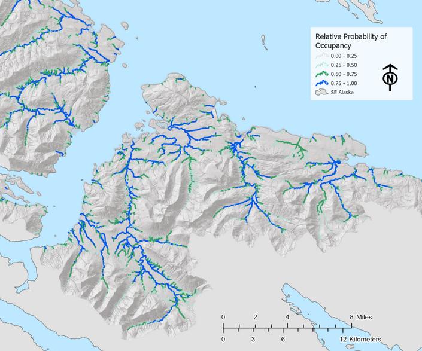

6 Future Directions
6.1 Summary
Our on-the-ground work serves to strengthen local freshwater habitat conservation and education efforts. However given the likely quantity of remaining undocumented anadromous habitat, going forward it will be critical to use a systematic, targeted fieldwork approach that can inform models for predictive occupancy maps that could one day be used for habitat regulation and management.
The collaboration between the Kenai Peninsula Chapter of Trout Unlimited and Kenai Watershed Forum serves as a compelling example of how to engage volunteers interested in conserving fish habitat with hands-on opportunities. There is great potential to expand and continue the work described in this report, and a great urgency to do so.
The Anadromous Waters nominations generated as a result of this project will play an important role in conserving salmon habitat in the areas we surveyed. The value of educating and engaging volunteer participants is also evident. However in a broader view, the primary take away from this project is the need to re-frame our long term approach for how to discover, document, and conserve anadromous habitat. Our current methods would continue to yield additional AWC nominations, but at a scale and pace insufficient to keep pace with new developments, even with many additiona volunteers. The potential to accelerate this work and document hundreds of additional anadromous stream miles on the Kenai Peninsula is ready at hand, and much of the initial groundwork has already been completed and is awaiting financial support.
Ultimately, the driving force behind the work described in this report is the presumption that Alaska freshwater habitat is not anadromous, unless anadromous fish have been physically documented. Our results strongly indicate the value of revising this assumption. The relative ease with which we documented over seventeen miles of anadromous stream and a thousand lake-acres within a growing residential area suggests that even our most sincere efforts to ground-truth the presence/absence of anadromous fish will dramatically underestimate their range. In the past, the presumption of non-anadromy may have served to manage the larger, more visually apparant rivers and lakes where adult fish migrate and spawn, but for smaller headwaters and tributaries it puts untold quantities of juvenile rearing habitat at existential risk.
How can we address this risk without putting undue burden on state agency managers, researchers, and permit specialists? It would be ideal if we could easily document each and every end-of-anadromy headwaters location, but given that the physical geography of watersheds is that of a tree-shaped fractal network with progressively smaller upstream headwaters (Carraro and Altermatt 2022), it is not a realistic goal. The number of such locations in the Kenai Peninsula Borough alone might number tens of thousands. If we wish to understand the full picture of where fish actually occupy the landscape, clearly another approach is needed.
Today, researchers are developing predictive models that can represent fish occupancy on the freshwater landscape with a high level of accuracy. These models are discussed in further detail below, and also in an essay on Kenai Watershed Forum’s website (“Mapping Alaska’s Salmon Habitat.)” Currently these models are regionally-focused. In the future, if a successful predictive model can be scaled to the state-wide level, managers and permit specialists may be able to use these maps when reviewing the impacts of proposed development projects. If adopted, such an approach would provide a level of detail that more accurately represents the true range of freshwater fish habitat.
6.2 Rationale for Anadromous Waters Mapping in Alaska
As described in Section 1.2 of this report, current Alaska statute is such that rivers, streams, and lakes throughout Alaska are presumed non-anadromous until otherwise demonstrated, thus the need for the hands-on documentation such as that featured in this project. A failed statewide ballot measure initiative in 2018 would have reversed the baseline presumption of non-anadromy, among other changes to salmon habitat regulations1.
Various state, federal, tribal, private, and non-profit entities have pursued the work of documenting anadromous habitat for decades and contributed to the detail contained within the anadramous waters catalog. When anadromous habitat is undocumented, proposed development on or near these waters will not trigger the need for a Fish Habitat Permit review from ADF&G, which requires impacts to be evaluated along with possible local mitigation requirements such as fish-friendly culverts or enforcement of riparian buffer zones.
This dearth of detailed map information has had consequences particularly in rapidly developing areas. For example, in Summer 2021 a tributary Soldotna Creek was partially excavated and ditched, and was not documented as anadromous until after the fact2. Arguably, this outcome would have been less likely had managers or the developer been aware that this salmon stream existed. Another prominent example is when in 2008-2010, dozens of anadromous streams were documented and nominated by The Nature Conservancy directly within the proposed footprint of Pebble Mine; waters that had not been documented by mine consultants conducting baseline assessments3,4. Thus the sooner that currently undocumented anadromous waters are documented, the more likely it is that impacts can be properly evaluated and mitigated prior to development.
6.3 Current State of Anadromous Waters Mapping
As described in section 2.1 of this report (Methods: Site Selection), most current fieldwork efforts are prioritized by visually assessing the overlap of stream segments in the Anadromous Waters Catalog and the National Hydrography Database. Communication among regional researchers and managers also helps choose fish survey locations, along with suggestions from the general pubic. Researchers have also used formal oral interviews with traditional knowledge holders to help suggest fish survey locations5.
While all these methods are useful in generating ideas for survey locations, they do not comprise a systematic approach and they are based on incomplete stream network maps. In order for conservation needs to better match the pace of conservation challenges, a more comprehensive approach is needed.
Some efforts toward this end have been initiated in recent years. In the southern Kenai Peninsula, researchers with Kachemak Bay National Estuarine Research Reserve (KBNERR) successfully applied a predictive habitat modeling approach in a study from 2012 (King et al. 2012)6 and added dozens of miles to the AWC from resulting efforts. However, the approach taken by the KBNERR researchers would arguably prove challenging to replicate at broader geographic scales, as it relies on extensive ground truthing of habitat characteristics and flow to produce the predictive models.
Another similar approach to anadromous habitat mapping is currently being applied in southeast Alaska by the U.S. Forest Service and other partners. Using high resolution stream network maps coupled with fish habitat intrinsic potential models, researchers are able to predict the locations of upper extent of anadromy with 98% accuracy with an average error distance of < 67m7. For more details see the StoryMap from Romey Fisheries and Aquatic Sciences8.
Predicting the locations of upper anadromous extent allows researchers to take a more informed approach to prioritzing their fieldwork of documenting anadromous habitat. Researchers in southcentral Alaska should aspire to emulate the approach described in the preceding StoryMap, prioritizing surveys of waters outside the federally managed areas of the Kenai National Wildlife Refuge and Chugach National Forest.
For future long-term efforts to effectively gather field data to be used in AWC nominations, two general research directions are suggested:
Application of higher-resolution stream network maps and habitat modeling approaches, such as NetMap9
Evaluation of “success rates” in prospecting for anadromous sites. E.g., how frequently, when, and where do predictions undocumented anadromous habitat prove correct?
Formal and frequent communication and collaboration among entities conducting anadromous habitat survey work
The combination of these approaches outlines a collaborative “ground-truthing” type approach to AWC mapping, where remote sensing data is used to make predictions that are then refined by field observations.
Given the near-perfect rate of predictions thus far using the predictive modeling approach, in the future these maps of stream segments predicted to be anadromous might be used by managers when evaluating environmental impacts and the need for permitting and mitigation – pending continued model refinement, public education and support, and acceptance by regulators.
For further discussion on the topic of anadromous waters mapping in Alaska, visit Kenai Watershed Forum’s website to read the post, “Mapping Alaska’s Salmon Streams.”
6.4 Next Steps
To follow though on the recommendations above, a dedicated research project is being developed and executed in cooperation with subject experts. The following steps describe a path forward:
Evaluate existing NetMap coverage for the Kenai Peninsula Borough
NetMap was commissioned for the Chugach National Forest in 2017, and Kenai Peninsula coverage extends from the Prince William Sound / Turnagain Arm region to the western boundary with Kenai National Wildlife Refuge. The shapefiles are available by contacting Kenai Watershed Forum or Romey Fisheries and Aquatic Sciences.
LiDAR, a geospatial dataset needed to produce the NetMap stream layers, already has complete coverage for the Kenai Peninsula Borough region.
In Summer 2024, the Kenai Peninsula Chapter of Trout Unlimited and Kenai Watershed Forum will conduct fieldwork to evaluate the efficacy of the End-of-Anadromy model developed by Romey Fisheries and Aquatic Sciences for in southeast Alaska. This work is supported by an additional Trout Unlimited Embrace-a-Stream grant awarded to the chapter in Fall 2023.
If the approach of applying the end-of-anadromy model for the Chugach National Forest region proves successful, we will pursue funding to expand this approach to the broader Kenai Peninsula Borough region and beyond.
Develop, communicate, and maintain a prioritized list of fish habitat survey sites shared among multiple agencies
Once a list of locations of predicted Upper Extent of Anadromy is generated using the NetMap layer, regional experts can use their knowledge of local conservation priorities to prioritize which sites should be surveyed first. This step will involve both a GIS based approach for tasks such as identifying parcel ownership status where sites are located, as well as a consensus/discussion based approach to apply knowledge of local conservation priorities and planning efforts.
Site survey responsibilities will be assigned to participating organizations. Once complete, preliminary results will be recorded in a shared database to minimize redundant site visits.
Recruit and train participants from agency employees and volunteers
Entities known to currently be engaged in the work of AWC nominations in the Kenai Peninsula region include the following, but are not limited to:
Alaska Department of Fish and Game Habitat Division
Kenai Soil and Water Conservation District
U.S. Fish and Wildlife Service
Kenai Watershed Forum
Kachemak Bay National Estuarine Research Reserve
Kenai Peninsula Chapter of Trout Unlimited
University of Alaska
Training sessions would be offered to encourage participation from the general public
Employing a consistent, user-friendly, collaborative method of data collection will be critical to implementing this project on a larger scale. ADF&G requires that AWC nominations are supervised by a “qualified biologist,” thus careful and systematic review of nomination data prior to submission will be essential. Use of a custom-designed ESRI Survey123 app is likely the most appropriate choice for this task. The smartphone app “Fish Map App”10 developed by the Indiginous Sentinals Network also shows potential to be highly useful in this process; though currently the app is not yet designed to record some essential information for juvenile surveys, such as gear effort.
A high degree of location accuracy (<1m) is required for ground-truthing NetMap data. Expensive options such as Trimble hand held devices may be inaccessible, thus it is suggested to train participants to use bluetooth accessory receivers (e.g. Bad Elf GNSS Surveyor) when recording coordinates.
Many other regions of Alaska have already had synthetic stream networks developed and mapped. Following the success of the work proposed above, the approach would be able to be replicated state-wide.
6.5 Final Words
While this report shows how much has been accomplished in documenting local salmon habitat, it is clearer than ever how much remains to be accomplished. We are grateful for the help and support of the dozens of volunteers involved with making this project happen and we look forward to continuing our efforts together.
https://ballotpedia.org/Alaska_Ballot_Measure_1,_Salmon_Habitat_Protections_and_Permits_Initiative_(2018)↩︎
https://bookdown.org/kwfwqx/awc_expansion/discussion.html#highlight-soldotna-creek-tributary↩︎
http://www.pebblescience.org/pdfs/FishSurveysinNushagak%20and%20Kvichakheadwaters.pdf↩︎
https://www.adn.com/alaska-news/article/salmon-documented-streams-top-pebble-prospect/2011/04/27/↩︎
Personal communication with Duncan Green, Alaska Department of Fish and Game, February 21, 2022↩︎
https://www.journals.uchicago.edu/doi/abs/10.1899/11-109.1↩︎
https://paperpile.com/app/p/e21bfd9e-9b5a-0237-ad38-12b73fbdccbb↩︎
https://storymaps.arcgis.com/stories/6b3949e1ebcd44c6a531d13f038807c5↩︎